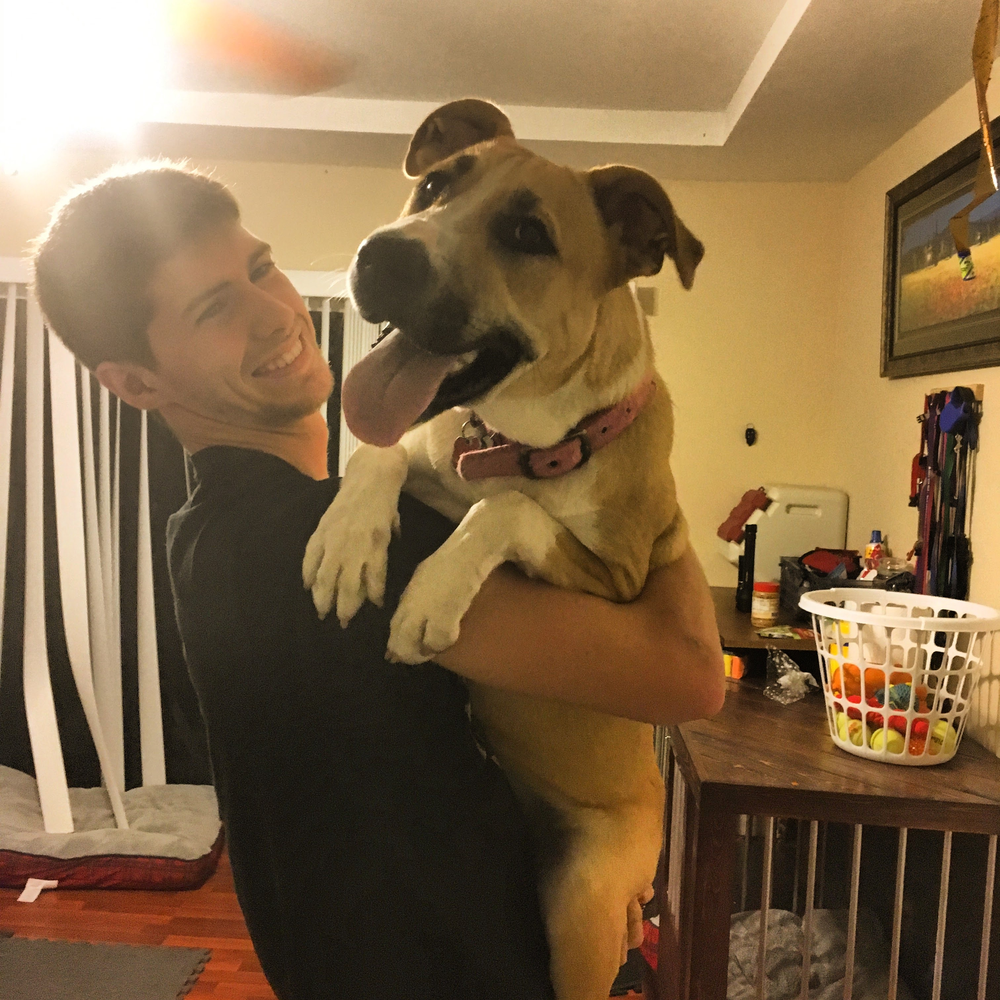

I am currently a full-time college student at Florida Gulf Coast University, this is my first year attending this college and it has been enjoyable so far. I am mainly a cheerful and positive person and like to joke around. Laughter is needed in life and if it wasn't, I would not know what to do with myself. I am a dog person at heart and I will always be one. Dogs are the most loving companions that anyone could have. Dogs are just always happy and so pure. Cats are not so pure. The major I am going for is Software Engineering. I chose this major because I was always interested in programming and coding. I took some engineering classes in high school, they were very informative but barely touch the subject of programing and coding. I may not be as experienced as some others going into this major, but I won't let that stop me from continuing on this journey
